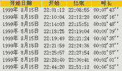

|
|
| 当前位置：电脑报电子版 > 1999 年 > 33 期 > 评测与市场 > 东方网神评测报告 |
| 《 东方网神评测报告 》 |
| 《东方网神》作为一个集成多种共享软件的网络平台，为当前的软件业提出一种新的概念——共享软件集成化及商业化。这种集成方式在目前是一种创新，所以，我们本次选择《东方网神》进行评测正是基于此。 本次评测的硬件环境：CPU（PⅢ450）、硬盘（昆腾九代10GB）、显卡（TNT2 16M显存）、内存（128MB）、调制解调器（InterStar Panther 5600）。 软件环境：简体中文Windows 98、简体中文IE 5、Taskinfo98 1.5版。 安 装 《东方网神》目前的版本包括简体中文Windows 9X版及繁体中文Windows 98版，并且安装光盘采用自动运行的方式。《东方网神》安装光盘包括东方网神、常用网络工具、网络教学等内容（如图1），全部容量达347MB，其中网络工具占156MB、网络教学占137MB、东方网神占24MB。 《东方网神》的安装过程比较简单，由于它的系统中必需有IE 4.0 或Netscape 4.0及以上版本，所以，开始安装东方网神时，会询问当前系统是否满足此条件，如果安装繁体Windows 98版，要求必需有IE5.0及MagicWin 98（中文平台）。主程序的安装缺省目录是“C：\Sunv!\dfws\”。安装完成后将在开始菜单及桌面建立快捷方式，并且将上网计费功能添加到开始菜单的“启动”中。《东方网神》提供了御载功能。 试运行 由于东方网神将上网计费功能加入到启动中，所以开机进入Windows后，计费图标会出现在系统栏中。如果用户是第一次运行，会弹出一个“东方网神用户认证”窗口，认证内容全部包括在东方网神的配套书中。缺省情况下，东方网神的主窗口（如图2）出现在屏幕的右边，其右上角有三个按钮：锁定、窗口左右切换、退出东方网神。“锁定”按钮相当于Windows窗口的最小化按钮，选择“窗口左右切换”可以把主窗口放到屏幕左边。 可操作性 在Windows系统中，我们要求各个软件具有Windows风格的界面及操作风格，这样就能使用户尽快地熟悉并掌握该软件。可操作性一直是我们对Windows中各个应用软件的要求，也是我们的标准。《东方网神》的安装界面、操作界面以及各运行窗口都属于Windows风格。主窗口具有与Web相似的界面与操作特性。对于电子服务中心的操作基本上都是Web风格，包括“前进”、“后退”、“返回首页”、“停止”和“刷新”等操作。 在Windows风格的窗口中，用户一般都能获得对该窗口功能及操作上的帮助，但《东方网神》在这一点上做得不是很好，只有进入《东方网神》的Web页帮助中或其主页中，用户才能即时获得帮助。 资源占用 系统中的资源占用是评价一个软件的重要指标。如果软件对系统的资源占用比较大，那么它必然在使用上受到较大的限制。在我们进行的资源占用情况测试中发现《东方网神》对各种资源的占用比较多(如表一)，系统资源和用户资源都占7％，GDI资源占4％，内存占用高达16MB之多，而工具软件除“邮箱助理”对系统资源的占用较多外，其它软件的占用都相对较少。由此可知：《东方网神》的集成功能不是对各种网络资源的简单集成，而是将多种软件的代码及动态链接库都进行集成，尽量减少对资源的重复占用，从而达到节省系统资源的目的。但是，由于集成了太多的功能，使得不论用户是否使用某些功能，它照样占用系统资源，从而影响整个系统的运行速度，所以《东方网神》这种集成太多的功能也有其不利的一面。 为了测试《东方网神》对Windows中Cache的利用情况，我们专门对几种代表性工具软件的第一次启动及第二次启动所需时间进行了比较，并且对于费用统计、东方网神、快速下载和集成的Foxmail 3.0在运行时资源占用及关闭后的资源占用进行了对比（如表2）。在测试中发现：费用统计、东方网神、快速下载和Foxmail 3.0第二次启动都较第一次快，特别是东方网神（第一次需要3秒，而第二次只需1秒），并且这四种工具软件在运行时与关闭后所占用的系统资源、用户资源和GDI资源都存在一定的差别，《东方网神》充分借用了Windows 的Cache功能，将软件中的资源进行暂存，方便下次快速启动。 因此，用户在使用《东方网神》时，如果硬配置较低，应尽量减少其它应用程序的运行，或者在使用其它应用软件时不开启《东方网神》，使得系统运行相对平稳。 软件集成 《东方网神》除了具有快速下载、Foxmail 3.0、GB－BIG5转码、特快专递及邮箱监视等网络工具外，还包括自动安装网络软件、东方网神教学和网页链接等功能。《东方网神》将这些功能的快捷键都保存在安装目录下名叫“dfwsset”目录之中的一个文本文件Tool.txt中。在我们经过多次测试比较后发现：快捷工具既可以在工具栏中进行增删，也可以直接在Tool.txt中进行增删（必须在退出《东方网神》后保存才有效，因为在退出东方网神时，它会将工具中的快捷往Tool.txt中写一次，主要目的是保证在工具中的增删有效）。1．自动安装网络软件： 《东方网神》集成了12类共48个共享软件，根椐不同的用户而选择不同的安装方式（如图3），包括上网推荐组合、主页制用户、高级上网组合、网络游戏组合及用户自定义等五种方式。在图3的窗口右侧，有当前选定软件的主窗口的界面及该软件的简短说明，因此，我们建议：对于刚开始上网的用户选择前四种方式比较适合，而对于具有一定网龄的的用户最好选择自定义方式进行安装，以免造成资源的浪费或功能上的不足。 在缺省情况下，《东方网神》对这48个共享软件的安装是全自动的，在安装时会出现如图4的窗口。经过对安装目录进行追查发现：这种自动安装功能是由每个共享软件目录中的一个执行文件（Inst.exe）来完成的。这些软件都安装在C盘中，这样如果安装的软件较多，不利于用户进行统一管理，所以，用户在安装时最好取消自动安装，即关闭图4的窗口（窗口中的“X”）。 2．《东方网神》教学： 《东方网神》教学对网络的基础知识、网络工具的使用及可能出现问题的原因进行了讲解，涉及的是基础内容。它采用多媒体方式，进行声音（Wav格式）和图像（Jpg格式）教学。但是，由于声音和图像占用的空间较大，而光盘的容量有限（最多650MB），所以，《东方网神》的教学内容虽然广泛但并不详细，适合初学者作一般性的了解。 3．快速下载： 《东方网神》的快速下载实际上就是大多数用户熟悉的网络蚂蚁，从界面、操作性及功能上测试看出，快速下载使用的是网络蚂蚁2.41的代码，只是将界面上作了小部分的修改并进行集成。它与网络蚂蚁一样，当软件下载到98％时会停顿一段时间。 4．计费及控制中心： 对于用户，上网的费用是一个普遍关心的问题，包括电话费用及网络服务费用。《东方网神》提供了上网计费及费用控制功能。在计费窗口中列出了当前系统统所设置的ISP以及每次拨号上网的详细资源清单（如图5）。 经过我们的反复测试发现： 1）如果在拨号上网后将系统日期修改为在拨号之前，此时会出现倒计时方式（从24：00：00开始减少），并且计费也成倒计费方式。 2）从拨号上网后开始计时，但必须在结束拨号后才开始统计总共上网时间，并算出电话费用及网络费用，如果在上网途中突遇死机或其它故障时，那么这次统计将无效，即无该笔记录。 3)在详细资料中显示的连线时间始终要比状态栏中显示的时间多30秒，而在数据局所提供的查询记录上却多60秒，经过我们多次测试，发现原因的所在：拨号上网存在三个过程，即开始拨入指定的ISP电话号码、验证用户身份、登录等，在东方网神状态栏中显示的时间是指登录以后开始统计，而在验证用户身份及登录时已经拨入电话经过一段时间，当然ISP会将这段时间的费用让用户承担，恰好最关键的也就是这一段时间。在测试中发现：重庆163从拨号进入到开始验证用户身份在10秒左右，而验证用户身份只需约1秒，从开始登录网络到完全进入网络在1分钟（60秒）左右，所以，《东方网神》也考虑到在登录网络的这段时间，所以它会将状态栏中的时间加30秒来得到最终的用户时间，但它没有对这段时间进行统计，只是简单的加30秒而已（如表3和表4的对比），上网时间差在33秒左右。 细心的读者从表3和表4可以看出，表3中只有8条记录，而表4中却有9条记录（表4中第4条记录不在表3中），产生这种情况的原因就在于拨号进入后，登录网络时断线所致，表4的统计是在登录时就开始计时，而表3必须在登录成功后才开始计时，所以表4中显示的“39″”实际就是从开始登录到断线用了39秒时间。 5．GB－BIG5转码： 在网上仍然有许多信息属于繁体中文（BIG5码），对于安装IE4而没有安装繁体中文字库的用户来说，这些繁体信息将毫无用处。不过，在《东方网神》中提供了内码转码功能：GB－BIG5转码。 为了方便用户的使用，《东方网神》中的转码功能同时提供剪贴簿转换和文件转换两种方式。为了测试在转换过程中是否发生错误，我们特地将一大篇文章从GB码转换成BIG5码，然后再转到GB码。测试结果发现，其转换精度比较高，但是在 “三”字的处理上会出现问题，GB码的“三”经来回转码后会变为“叁”。 6．特快专递： 特快专递是《东方网神》自身集成的邮件功能，它只能用于发送邮件，不能接收邮件，但它比普通电子邮件更快、更准确。 我们为了测试特快专递的快速性，特地用了多个邮件地址相互发送邮件（图6），经过测试发现：向任一个邮件地址发送邮件完毕后，马上用Foxmail 3.0开始收取邮件，都能立即收到。 特快专递实现的原理非常简单。普通的电子邮件在发送邮件时首先将邮件发到当前设定的Smtp服务器中排队等候发送，由该服务器确定时间来发送此邮件到收件者的POP3服务器；而特快专递省去发送到Smtp服务器的过程，直接发送到收件人的POP3服务器中，避免了邮件的积压。 因此接收方会较快地收到邮价，这是《东方网神》自己内置的一个比较有特点的功能。遗憾的是，特快专递发送邮件时只能使用拖动的方式进行，而不是采用浏览方式，对于习惯了浏览方式的用户略感不便。据悉，《东方网神》的下一个版本将作出改进。 网络功能 《东方网神》虽然集成了许多优秀的共享网络软件（如网络蚂蚁、Foxmail 3.0等），但它自身也融合了一些网络功能：电子服务中心、综合管理、网址资源、可视书签、快速搜索和快速浏览等。电子服务中心主要用来获取网上的最新新闻、热门软件、网上热点、好站推荐等，但这些内容都必须由所有网站自己选择并提供给用户。新闻将每天自动下载到安装目录下的“newsnow!”中，用户就可以进行离线阅读。另外，电子服务中心还提供升级信息，帮助用户在线升级。《东方网神》并没有提供删除过时新闻的功能，经过较长的时间后，那些过时新闻势必会成为一堆垃圾，占用硬盘资源，所以，我们希望《东方网神》在下一个版本中为用户提供此功能。 综合管理功能包括三种功能：浏览管理、邮件管理和下载管理。《东方网神》的浏览管理实际上是在硬盘上开辟一块缓冲区，将最近浏览过的网页下载并保存页面文件(如图7)，但并不保存主页。而且主页中的GIF和JPG图形文件分别保存到GIF和JPG中。而这些信息保存到“Cache”目录中的htmltitleindex.txt和htmltitleinfo.txt中。每次启动或退出《东方网神》时，都会被重写一次，这两个文件中主要保存最新被浏览的主页。邮件管理与浏览管理比较类似，主要对使用特快专递发送的电子邮件进行管理。 下载管理主要与DownLoadNow!（快速下载）进行结合，对下载的文件进行管理。《东方网神》专门开辟了一个目录Download存放下载文件，并且还可以对下载的文件进行分类，用户也可以根据自己的习惯对分类进行添加或删除。下载管理提供了注释编辑功能（如图8），为每个下载软件编辑注释，方便以后查找。注释文件存放在与下载软件同一目录下并且同名的一个文件中，后缀名为_rem。 在《东方网神》中列出了一万五千多个网址，全部以文本方式保存在“netres”（即网络资源的缩写）目录中，每一个大类分别为一个文本文件，在这个目录中有一个名叫“Cache”的文本文件，它用来保存最后一次浏览网址所在大类的第二层的所有网址（当然包括第一层中含的网址），它的主要目的就在于下次启动时直接进入该层。 在可视书签中收集了140多个常用网站首页，并且都是以JPG格式存放在安装目录下的“VisiBM”目录中，文件名即为该网站的网址。 评测总结 《东方网神》在界面风格和可操作性方面都适合Windows风格，用户能够在较短的时间内熟悉并掌握它；由于《东方网神》集成了较多的网络功能，这种集成功能相对一方面来说节省了资源占用，因为多个共享软件的集成势必会使用它们共享部分相同的资源，另一方面又由于东方网神在启动时就会载入较多的内容，从而占用大量资源，造成资源占用率较高，这是它不利的一个方面。《东方网神》集网络自动设置、费用统计、共享软件的自动安装于一身，所以，它对于初学者及初上网的用户是一个比较适合的网络平台。《东方网神》在费用统计的设计上应该说思路明确，它可以帮助用户随时查看当前费用情况，并在接近限定金额时报警，但在我们的测试中发现它在计时方面不是很准确，所以，我们希望在《东方网神》的后续版本中加以解决。 我们本次对《东方网神》的评测不仅仅是针对其作为一个网络平台软件来进行，而是针对它的新举措——共享软件集成并向商业化发展进行。共享软件作为体现程序员个性的软件，它有一定的实用范围，毕竟它还不是一个非常成熟的软件产品。但现在已经不是DOS时代，单靠个人不可能在Windows时代取得辉煌的成就，所以共享软件也需要商业上的支持，才能走得更快、更广。 （电脑报评测实验室 木须 飞雪连天） |
| 下载本期推荐软件 | 页 首 |
| 《电脑报》版权所有，电脑报网站编辑部设计制作发布 |